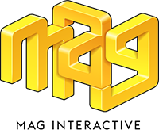

Marketing Manager at MAG Interactive
February 2016 - Present
Joined and together formed a marketing team at MAG since a little over two years ago. Now a couple of years later we´ve become a public company, purchased FEO Media and released 5 games, all this besides managing MAG´s vast portfolio of 10 games with 200M+ players as well as MAG as a brand.
I´m very proud of my MAG journey thus far.
Highlights this far:
We IPO´d! Managed the entire IPO process from a commercial perspective
Full rebrand of MAG Interactive and its games. Incl Social Media, Logo, Font, all texts and images.
Launched 5 games, Wordbrain2, Wordalot, Wordalot Express, Chat Battle and Backpacker.
Launched global cross product & cross channel campaigns.
KPI´s include:
- LTV
- Monetization
- Retention
- Engagement
- Revenue
- Player life cycle
Manage marketing for MAG as a brand and product marketing for 200Million+ players across 11 games
Responsibilities include:
Investor Relations
Brand Marketing
Global PR
Consumer and Corporate strategy and operations
Employer Brand
IP owner